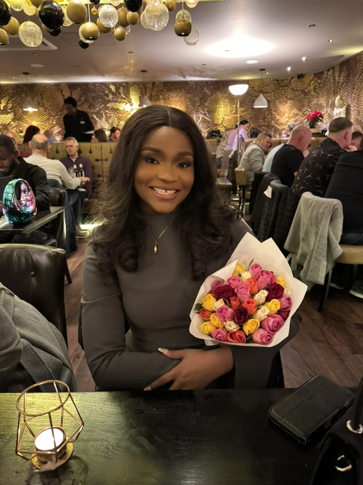

Eneh Chidera Elizabeth

Summary
Recently completed a master’s degree in energy and environment at the
University of Leeds, with proven ability to lead sustainability
initiatives, manage cross-functional teams, and streamline processes using
data analytics and project management tools. Proficient in environmental
impact assessment, carbon auditing, and energy management systems.
Education
-
University of Leeds, Sep 2023-Sep 2024
Master of Science (MSc), Energy and Environment
Graduated with Distinction.
-
Afe Babalola University Sep 2017- Sep 2021
BSc Biochemistry
Graduated with First Class Honors.
Work Experience
-
Sales Advisor- Warren James
Sep 2024 - Dec 2024
-
Developed and implemented customer-centric sales strategies that
consistently exceeded targets by up to 25%, demonstrating strong
sales performance and customer engagement.
-
Provided tailored advice to customers by assessing their product
needs, enhancing customer satisfaction and building loyalty through
personalized service.
-
Sustainability Rep - University of Leeds
Oct 2023 - Sep 2024
- Led over 3 sustainability initiatives across the residence, organizing events to enhance environmental awareness and encourage sustainable practices among students.
- Supported Residential Services and Student Sustainability Architects in implementing Blueprint actions within residences, contributing to the university's overall sustainability objectives.
Skills
- Microsoft Office Suite: ⭐⭐⭐⭐⭐
- Customer Services: ⭐⭐⭐⭐⭐
- Problem solving: ⭐⭐⭐⭐⭐
Other